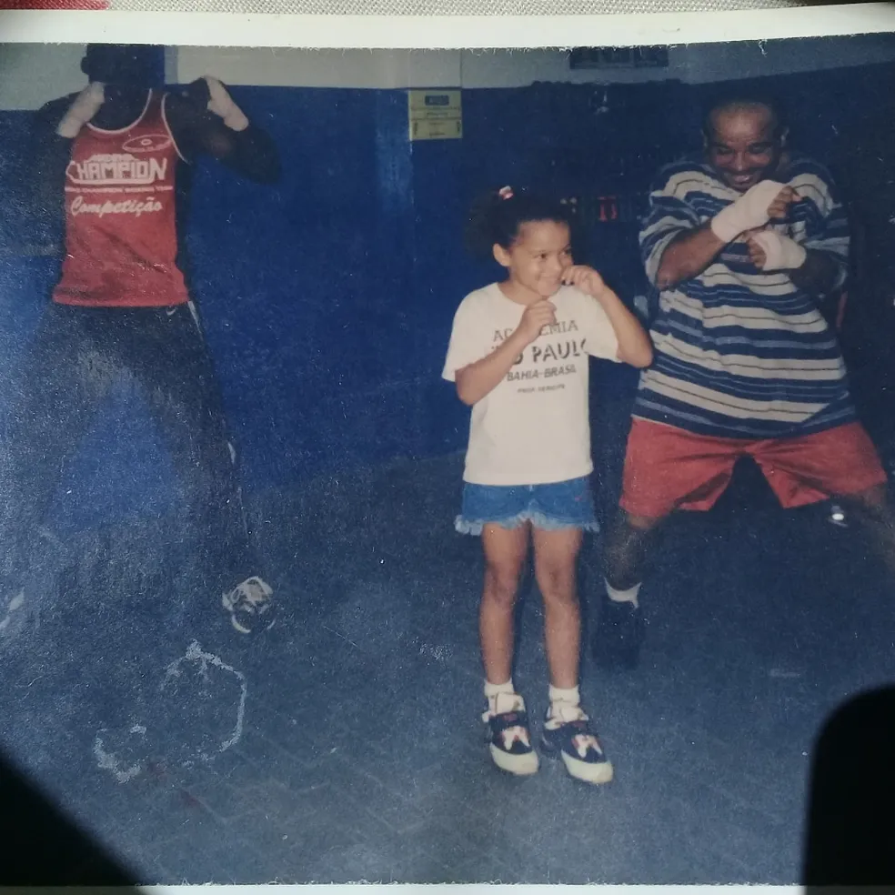
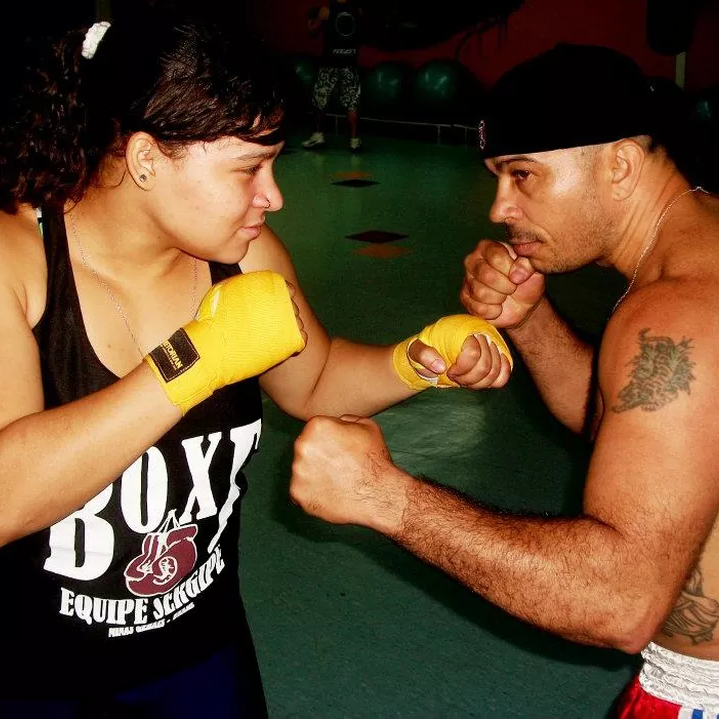

Tudo começou na Bahia, onde uma menina nasceu com DNA vencedor. Bia é filha de Raimundo Oliveira Ferreira.
Mais conhecido como Sergipe, ele foi tricampeão baiano e bi do Brasileiro nos pesos-galo e supergalo.
Com o passar do tempo, a pequena Bia se apaixonou pelo trabalho do pai, com um soco aqui, outro ali. Ela
começou a treinar de maneira mais consistente a partir dos oito anos de idade, e não parou mais.


Ela rapidamente se destacou, conquistando títulos nacionais e internacionais. Em 2019, Bia ganhou o
campeonato mundial na Rússia e, no mesmo ano, foi eleita a melhor boxeadora do mundo pela Associação
Internacional de Boxe (AIBA). Ela conquistou a prata nas Olimpíadas de Tóquio 2020 e o bronze nas Olimpíadas
de Paris 2024, solidificando-se como uma das maiores atletas do boxe brasileiro.